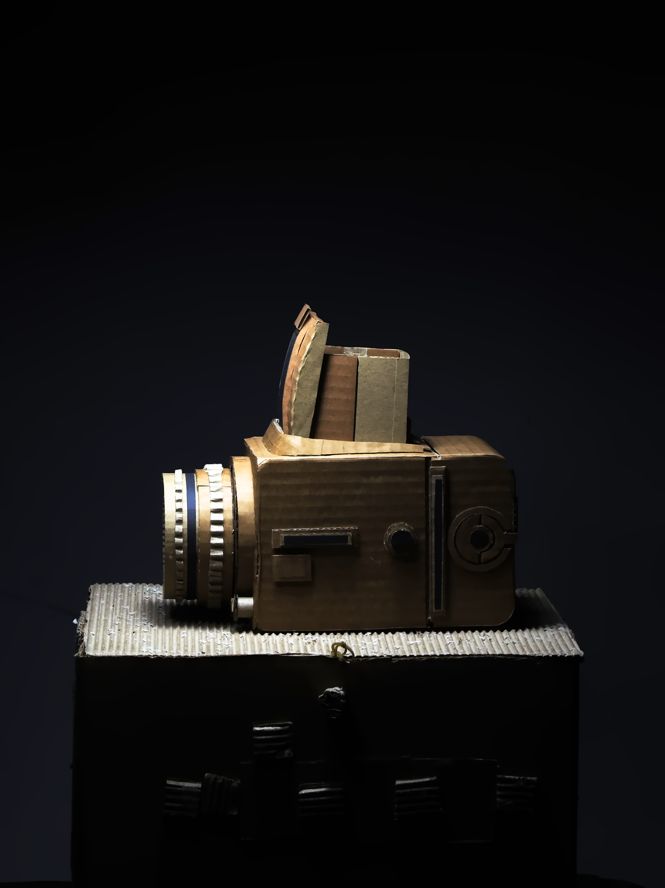
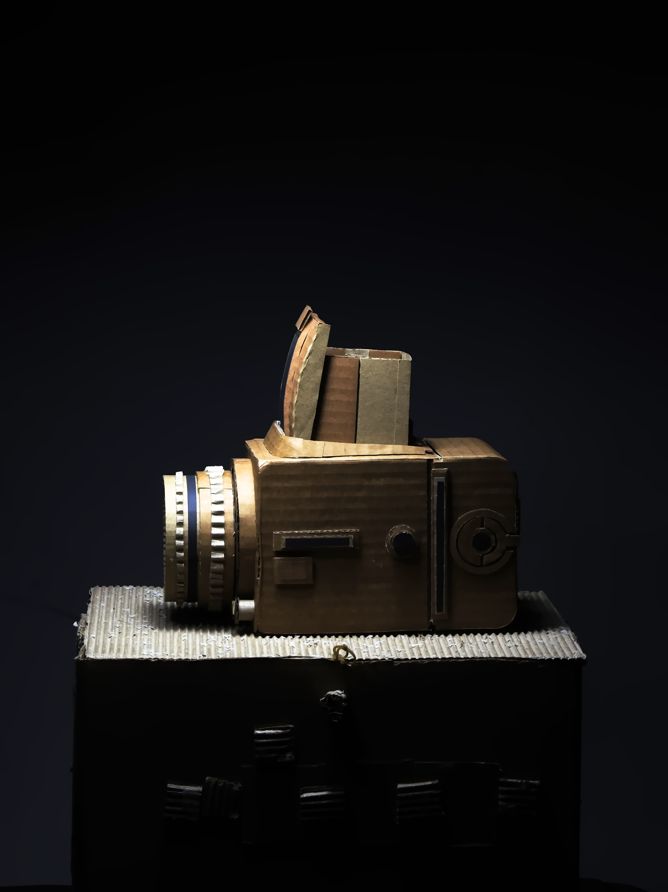

My name is Abdullah.
I have experience with Print design, including Posters, cards, and logo design. I also do sculpture work as a fun ast time:)
I have worked with some of my favorite artists including Kiel johnson, and Zain Bhikha, for his video "I still see you there" and "Beyond the sunrise". Im currently freelancing on Upwork for a startup
If you want to reach out for anything or my creative process, feel free to contact me at: Abdullahcanhelp@gmail.com